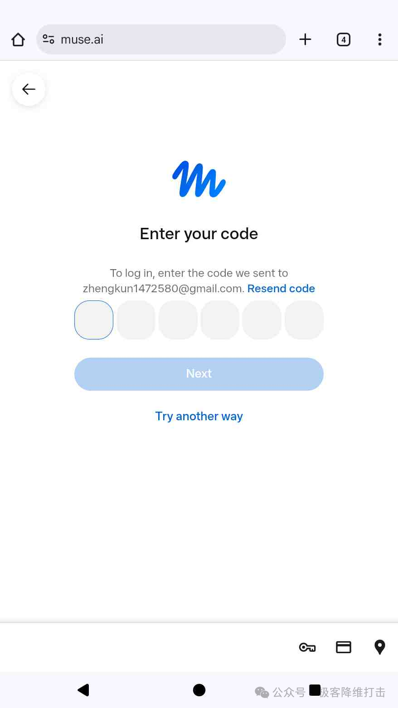
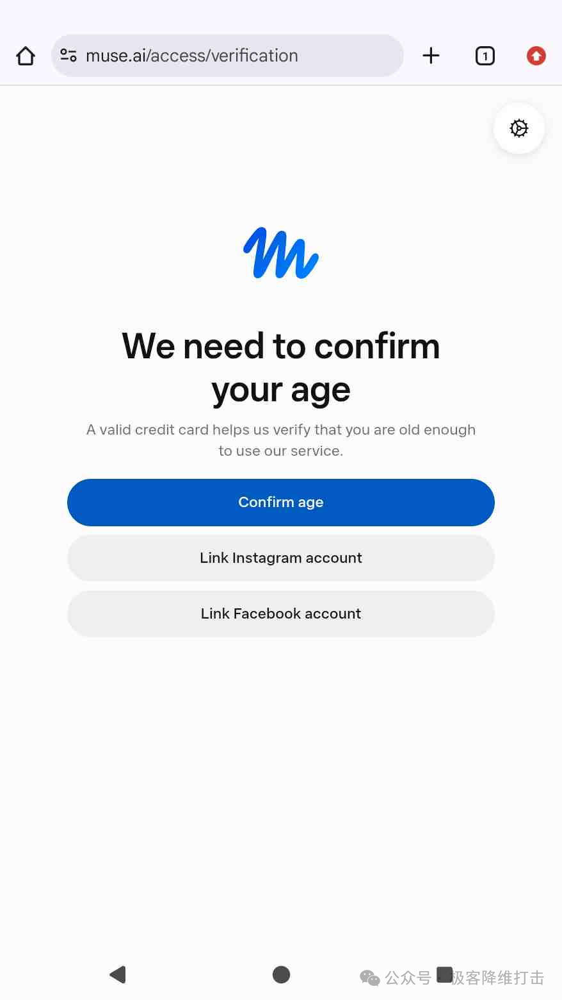
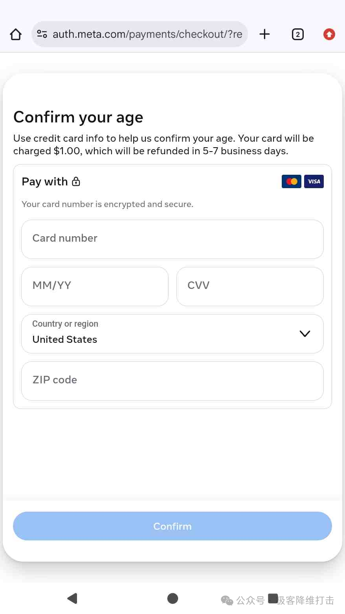
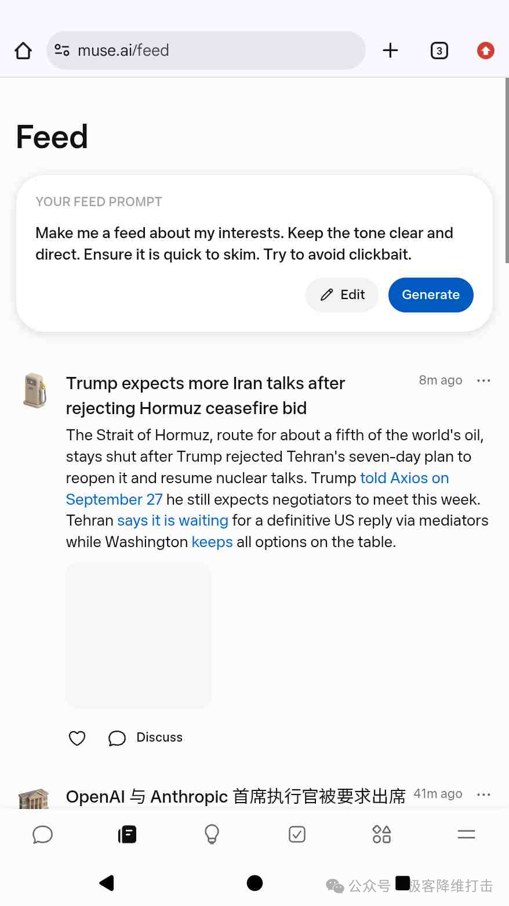
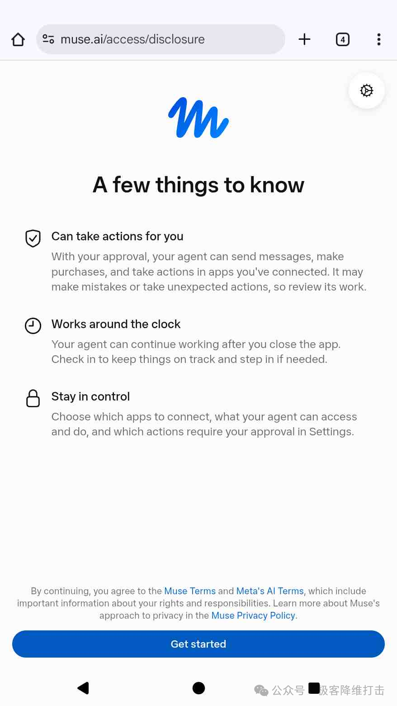

先了解：Muse 的页面、开放地区、验证方式和奖励规则可能调整。本指南为独立使用说明，并非 Muse 官方页面。请以 Muse 官网和 App 当前展示为准，使用真实信息并遵守当地要求。
Muse 怎么注册
- 打开注册入口：前往 Muse 注册页面，根据当前页面提示开始注册。如果服务暂未向你开放，请查看官网说明。
- 验证邮箱：填写邮箱并获取验证码，查收邮件后输入验证码。不要把验证码提供给他人。

- 完成年龄核验：可选方式可能因账号与地区不同。只使用页面实际提供且你愿意使用的方式；若出现银行卡预授权或扣款说明，先核对金额、用途及退款条款。


- 阅读权限说明：注册流程可能展示功能介绍和权限选项。请先阅读权限及代理行为说明，再决定是否继续。
- 登录并开始使用：完成注册后，通过 Muse 网页或 App 登录。


Muse 邀请码在哪里兑换
加入 Muse 后，请在 48 小时内打开 Muse App，进入设置（Settings），找到邀请码兑换入口，输入邀请码并提交。菜单位置或名称可能随版本变化；提交后确认页面显示兑换成功。
邀请码
7F6MSA
该邀请码宣传奖励为双方各得 10 亿 Token，宣传价值约 200 美元。实际额度、价值口径、有效期、地区资格和名额以 App 兑换页面显示为准。
常见问题
邀请码应该什么时候输入？
按当前指南，加入后 48 小时内在 Muse App 的“设置（Settings）”中查找兑换入口并提交。若菜单有变化，请以 App 当前界面为准。
邀请码的奖励一定是 10 亿 Token、价值 200 美元吗？
这是邀请码对应的宣传奖励说明，不代表固定现金价值或无条件保证。最终奖励和适用条件以 Muse 兑换页面实际显示为准。
年龄核验时必须绑定银行卡吗？
验证选项可能因地区和账号而异。请只按页面提供的选项操作，并在继续前确认任何预授权或扣款条款。
注册页面打不开怎么办？
服务开放状态和地区支持可能改变。请尝试从 Muse 官方网站进入，并查看其当前的可用地区和注册提示。
本页面仅提供一般操作信息；产品界面与规则可能更新。请以 Muse 官方网站和 App 的最新说明为准。